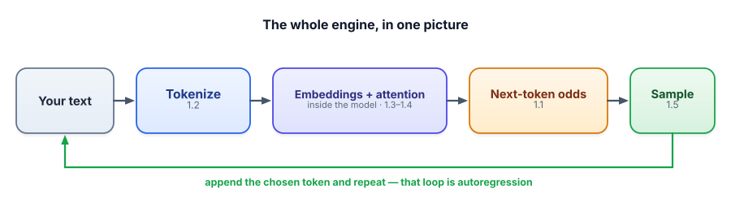

Foundations Q&A
Every GenAI interview starts with the basics: tokens, embeddings, the context window and sampling.
Interviewers aren't checking that you memorised definitions.
They want to hear that you understand the machine: how it works, and what that means in practice.
A good answer has three parts: the mechanism, the consequence, and a bit of judgment.
Keep it to 30 to 45 seconds, then stop and let them ask the follow-up.
Think of a driving examiner asking “what does the clutch do?”. A weak answer recites the manual. A strong one says how it works (it disconnects the engine from the wheels), what follows (forget it and you stall when you stop), and a bit of judgment (don't ride it in traffic).
| In the picture | In the real system |
|---|---|
| How the clutch works | The mechanism: next-token prediction, tokens, embeddings, attention |
| Stalling if you forget it | The consequence: cost, context limits, latency, failure modes |
| Don't ride it in traffic | Judgment: when you would not use an LLM, and how you would verify |
| Answer, then wait for the next question | 30 to 45 seconds, then stop and let them follow up |
Where the picture breaks. An examiner wants one right answer and moves on. An interviewer uses your answer to pick the next question, so leave a door open for the follow-up instead of saying everything at once.
Going deeper
Fundamentals are table stakes: every candidate is expected to know tokens, embeddings, context, and sampling cold. This is a rapid-fire bank to make those answers automatic. Say each one aloud before opening it — fluency, not recognition, is the goal.
They’re checking that you understand the machine, not that you memorized definitions. Lead with the mechanism (next-token prediction), then the practical consequence (cost, limits, failure modes). A crisp, consequence-aware answer beats a textbook one every time.

The bank
“In one breath, how does an LLM generate text?”
▸ Answer
It predicts the next token given the tokens so far — a probability over its whole vocabulary — then samples one, appends it, and repeats (autoregression). All its “knowledge” is patterns learned by doing this over huge amounts of text.
“What’s a token, and why care about counts?”
▸ Answer
A chunk of text (often a word-piece) from the model’s fixed vocabulary, produced by a sub-word tokenizer (e.g., BPE). Tokens are the unit of cost (billing), context limits (windows), and latency. ~4 chars/token in English; code and many languages cost more. They also explain why models miscount letters — they see tokens, not characters.
“What’s an embedding and how do you compare two?”
▸ Answer
A vector representing a text’s meaning, from an embedding model trained so similar meanings get similar directions. Compare with cosine similarity (+1 similar, 0 unrelated, −1 opposite). They power semantic search and RAG — matching meaning even without shared words. (Distinct from the model’s internal token representations; for retrieval we mean text/sentence embeddings.)
“What is the context window, and what happens when you exceed it?”
▸ Answer
The max tokens the model can process at once, shared by instructions, history, retrieved context, and the output. Exceed it and the oldest tokens get truncated (chat “memory” is just re-sent history). Bigger isn’t free — more cost, more latency, and “lost in the middle,” which motivates RAG over dumping everything in.
“What is attention, and why is long context expensive?”
▸ Answer
Attention lets each token weigh how much every other token matters, which is how references and meaning get resolved (the transformer’s core). Because every token compares against every other, the work scales with the square of sequence length — doubling context roughly quadruples attention cost. That’s the deep reason long prompts are slow and pricey.
“Explain temperature and top-p; settings for extraction vs brainstorming?”
▸ Answer
Temperature reshapes the probability distribution before sampling — low sharpens toward the top token (deterministic), high flattens it (varied). Top-p (nucleus) samples from the smallest set of tokens summing to p, adapting to confidence. Extraction/JSON/classification → temperature 0 (consistency); brainstorming → ~0.8–1.0 with top-p ~0.9 (diversity).
“Why do LLMs hallucinate, and how do you reduce it?”
▸ Answer
Because they generate the most plausible next tokens, not the most true, with no built-in “I don’t know” — and confidence is uncorrelated with correctness. Reduce it by grounding in retrieved real data (RAG) with “answer only from context + cite,” giving tools for facts/math, lowering temperature, validating outputs, and showing sources. You manage hallucination with architecture, not by asking the model to be accurate.
“Base model vs instruct/chat model?”
▸ Answer
A base model is the raw next-token predictor from pre-training — it just continues text. An instruct/chat model is a base model further trained on instruction–response examples and shaped with human preferences (RLHF/DPO), so it follows directions like an assistant. Same engine, extra alignment training.
“Your classifier returns inconsistent formats. What do you do?”
▸ Answer
Pin the output: add a few-shot examples in the exact format, specify the allowed labels and shape explicitly, and use temperature 0. Inconsistency is unspecified format — specificity narrows the distribution. For machine consumption, use JSON mode + validate + retry.
“When does chain-of-thought help, and can you trust the reasoning?”
▸ Answer
It helps on multi-step tasks because each written step becomes context the answer builds on, instead of a one-token leap. But the reasoning is generated text — it can look logical and be wrong, and isn’t guaranteed to be the real cause. So use CoT for accuracy but verify high-stakes results (tools, checks, self-consistency); skip it for simple single-step tasks where it just adds cost.
“Name a task you would NOT hand to an LLM.”
▸ Answer
Anything where a confident wrong answer is costly and the truth isn’t in the prompt — e.g., computing an exact refund from billing rules, or a specific medical/legal determination. The model may produce a fluent, wrong answer with no uncertainty signal. I’d route the exact computation to deterministic code/tools, ground it in authoritative data and verify, or keep a human in the loop. Knowing when not to use an LLM is the senior signal.
An interviewer asks the “one-line” LLM description as a warm-up. Which answer signals the strongest mental model?
An interviewer asks why an LLM hallucinates. Best answer?
- Lead with the mechanism, then the practical consequence (cost / limit / failure mode).
- Reach for the recap picture: text → tokens → embeddings+attention → next-token odds → sample → repeat.
- Show judgment: mention when not to use an LLM, and how you’d verify.
- Keep it tight — 30–45 seconds per answer, then stop and let them follow up.
Fundamentals down. Now the most heavily-tested area in modern GenAI interviews. Next: RAG Q&A.
In one line: Say how it works, say what that means in practice, show one bit of judgment, then stop.